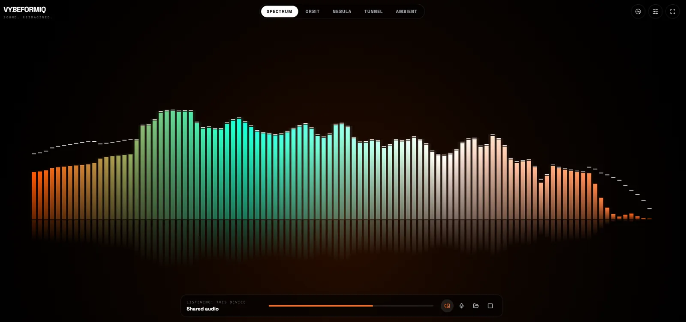
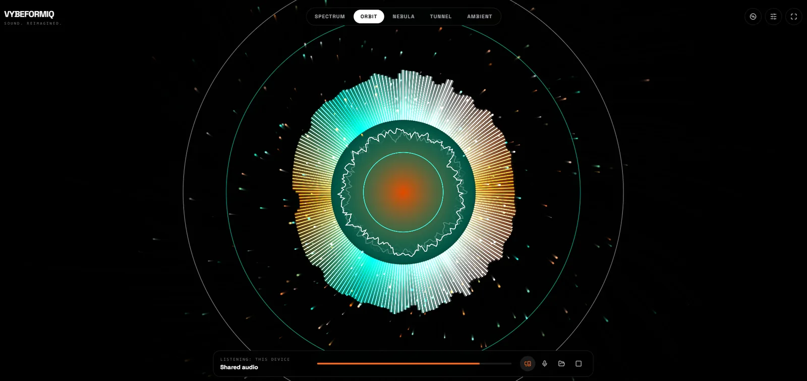
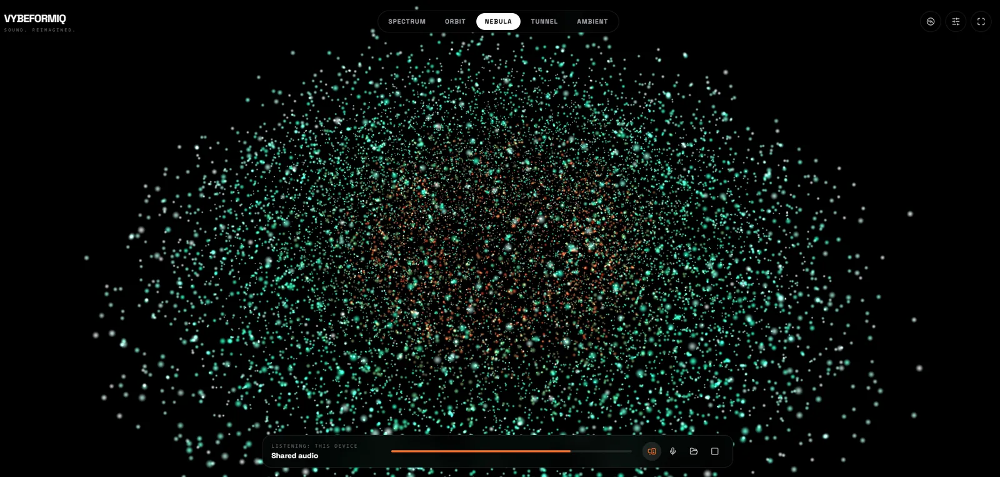
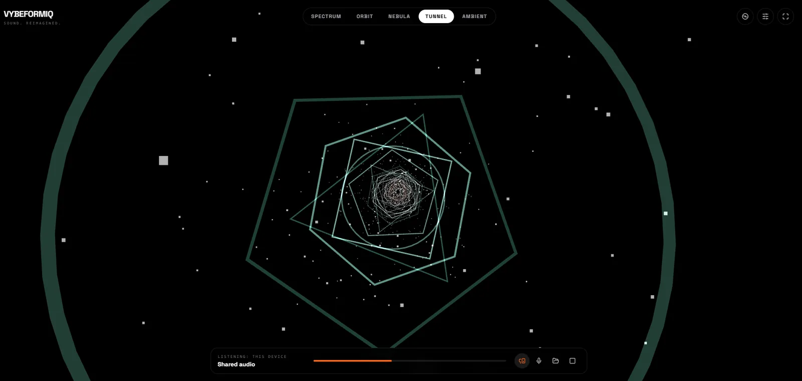
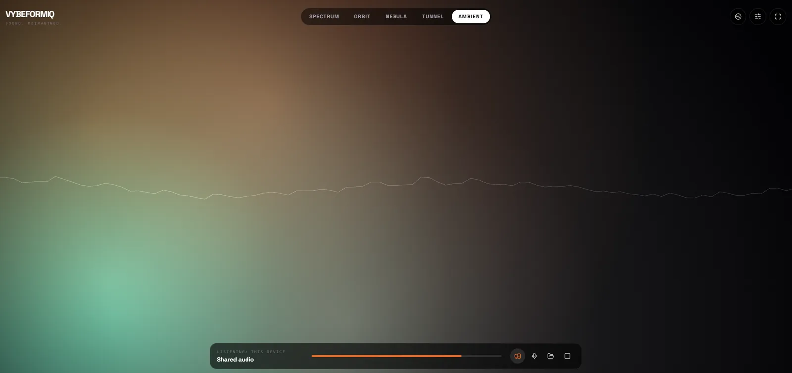

Mode 01
Spectrum
The classic. Frequency bars with falling peak caps and a mirrored floor reflection, coloured left to right across the active palette.
Frequency bandsBass glow
VYBEFORMIQ is an audio-reactive visualizer that follows the music you already listen to. Spotify, Pandora, YouTube, a microphone or your own files drive five full-screen visual modes, from classic frequency bars to a 3D particle cloud.

Streaming services keep their audio locked inside their own apps, so the visualizers people grew up with disappeared. VYBEFORMIQ brings them back by listening to your device instead of plugging into any one service.
No Spotify or Pandora account linking. Share the tab or screen that's playing and the visuals follow along, whichever service it is.
Sound is analysed frame by frame in the browser with the Web Audio API. Nothing is recorded, stored or sent to a server.
Full-screen with one key. The interface fades away when the mouse goes still, so a TV or second monitor shows nothing but the visuals.
Open the link and pick a source. No download, no sign-up, and settings are remembered in the browser for next time.
Every mode reads the same live analysis: 64 frequency bands, the raw waveform, bass, mids, treble and a beat detector. Switch between them with the top bar or keys 1–5.
The classic. Frequency bars with falling peak caps and a mirrored floor reflection, coloured left to right across the active palette.

A circular spectrum around a glowing core, with the live waveform traced inside it. Each beat throws a burst of particles outward.

Up to 20,000 particles in a slowly turning 3D cloud. Each particle is tied to its own frequency band and pushes outward when that band gets loud.

A flight through rotating triangles, hexagons and circles. Flight speed rises with the volume, and every beat kicks it forward.

Slow, soft colour fields with a faint waveform horizon. Heavily smoothed so nothing flashes: made to sit on a second monitor without pulling focus.
Three ways in, switchable at any time from the transport bar at the bottom of the screen.
Share the browser tab or the whole screen that's playing, and VYBEFORMIQ follows the sound.
Play music through speakers and let the mic pick it up. The option that works on phones and tablets.
Pick audio files or drop them anywhere on the page. They queue up and play with full transport controls.
A controls panel shapes how hard the visuals react and how they look. Favourite combinations save as named setups.
| Control | What it does |
|---|---|
| Sensitivity | How strongly the visuals respond to the overall signal, from subtle to explosive. |
| Bass intensity | Boosts or tames the low end that drives pulses, glow and beat bursts. |
| Density | Bar count, spike count, particle count and tunnel depth, scaled together. |
| Palettes | Ember, Aurora, Synthwave, Glacier and Mono, plus a custom three-colour palette. The interface accent follows along. |
| Saved setups | Store the current mode, palette and response settings under a name and switch back in one click. |
| Shortcuts | 1–5 switch modes · Space play/pause · F full screen |
A single audio engine produces one shared frame of analysis per animation frame. Every visual mode reads from it.
An AnalyserNode runs a 2048-point FFT, folded into 64 logarithmically spaced bands from 30 Hz to 16 kHz with a gentle high-frequency tilt. Beats are detected when bass energy jumps clear of its own recent average.
Files play through an HTMLAudioElement; mic and shared audio arrive as MediaStream sources that feed analysis only. Captured input is auto-levelled against its recent peak so quiet sources still move the visuals.
Spectrum, Orbit and Ambient draw on Canvas 2D with additive blending. Nebula runs a custom GLSL point shader in Three.js, and Tunnel animates meshes with React Three Fiber; the 3D code only downloads when one of those modes is opened.
Zustand keeps playback state apart from visual settings. Mode, palette, response controls and named setups persist to localStorage, and an idle animation keeps the stage alive before anything plays.
Open VYBEFORMIQ, pick a sound source and choose a mode. Best in desktop Chrome or Edge, full screen.